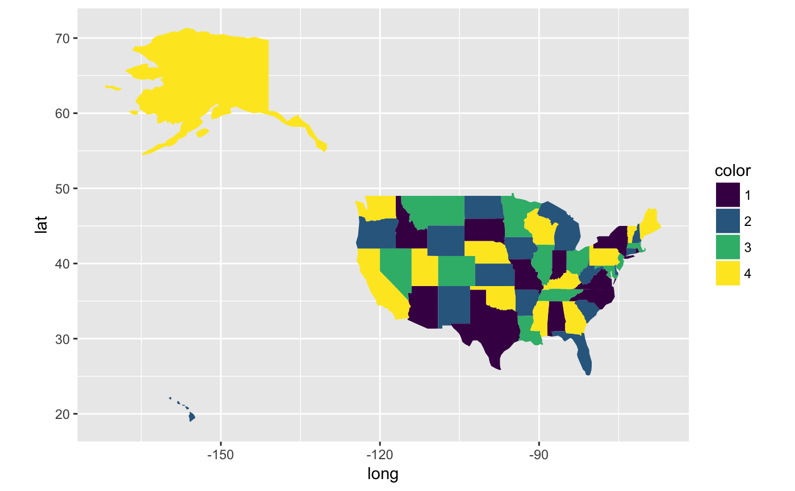

vignettes/problem-graph-coloring.Rmd
problem-graph-coloring.RmdIn this article we will model the minimum graph coloring problem. The goal: color a map with as few colors as possible while no two adjacent regions having the same color.
First, let’s load some useful packages needed for (spatial) data processing.
Then we read in the 50 states of the US.
# data from https://github.com/datasets/geo-boundaries-us-110m
# reference data from here: https://github.com/nvkelso/natural-earth-vector/tree/master/110m_cultural
# License of reference data: public domain (https://github.com/nvkelso/natural-earth-vector/blob/master/LICENSE.md)
map_data <- rgdal::readOGR("https://raw.githubusercontent.com/datasets/geo-boundaries-us-110m/84e946f6b1de01e2642bcdb17d5b697acb6b48c4/json/ne_110m_admin_1_states_provinces_shp_scale_rank.geojson", "OGRGeoJSON")## OGR data source with driver: GeoJSON
## Source: "https://raw.githubusercontent.com/datasets/geo-boundaries-us-110m/84e946f6b1de01e2642bcdb17d5b697acb6b48c4/json/ne_110m_admin_1_states_provinces_shp_scale_rank.geojson", layer: "OGRGeoJSON"
## with 51 features
## It has 3 fieldsNext step is to create an adjacency list to determine neighboring states.
# this gives as an adjancy list
neighbors <- spdep::poly2nb(map_data)
# a helper function that determines if two nodes are adjacent
is_adjacent <- function(i, j) {
purrr::map2_lgl(i, j, ~ .y %in% neighbors[[.x]])
}We can then ask:
## [1] FALSE## [1] TRUENext, we will model the problem with ompr as a mixed integer linear program that tries to find a coloring with as few colors as possible.
n <- nrow(map_data@data) # number of nodes aka states
max_colors <- 4 # 4 should be enough. But you increase this number.
# based on the formulation from here
# http://wwwhome.math.utwente.nl/~uetzm/do/IP-FKS.pdf
model <- MIPModel() %>%
# 1 iff node i has color k
add_variable(x[i, k], type = "binary", i = 1:n, k = 1:max_colors) %>%
# 1 iff color k is used
add_variable(y[k], type = "binary", k = 1:max_colors) %>%
# minimize colors
# multiply by k for symmetrie breaking (signifcant diff. in solution time)
set_objective(sum_expr(k * y[k], k = 1:max_colors), sense = "min") %>%
# each node is colored
add_constraint(sum_expr(x[i, k], k = 1:max_colors) == 1, i = 1:n) %>%
# if a color k is used, set y[k] to 1
add_constraint(x[i, k] <= y[k], i = 1:n, k = 1:max_colors) %>%
# no adjacent nodes have the same color
add_constraint(x[i, k] + x[j, k] <= 1, i = 1:n, j = 1:n, k = 1:max_colors, is_adjacent(i, j))## Mixed integer linear optimization problem
## Variables:
## Continuous: 0
## Integer: 0
## Binary: 208
## Model sense: minimize
## Constraints: 1135The last constraint uses filter expressions:
This code generates a constraint for each combination of i, j and k with the additional constraint, that is_adjacent(i, j) needs to evaluate to TRUE. Using filter expressions let’s you design a very specific set of constraints with minimal code. This principle can be used with all functions that acceppt quantifiers: sum_expr, set_bounds, add_constraint and add_variable.
Now since we have built the model, we will solve it using the excellent ROI package and the GLPK solver. ompr.roi is a solver that takes an ompr package and translates it to ROI: this makes it possible to use range of solvers out of the box.
## <SOLVER MSG> ----
## GLPK Simplex Optimizer, v4.63
## 1135 rows, 208 columns, 2372 non-zeros
## Preprocessing...
## 1135 rows, 208 columns, 2372 non-zeros
## Scaling...
## A: min|aij| = 1.000e+00 max|aij| = 1.000e+00 ratio = 1.000e+00
## Problem data seem to be well scaled
## Constructing initial basis...
## Size of triangular part is 1135
## 0: obj = 0.000000000e+00 inf = 2.710e+02 (271)
## 67: obj = 4.500000000e+00 inf = 0.000e+00 (0)
## * 193: obj = 1.500000000e+00 inf = 0.000e+00 (0) 1
## OPTIMAL LP SOLUTION FOUND
## GLPK Integer Optimizer, v4.63
## 1135 rows, 208 columns, 2372 non-zeros
## 208 integer variables, all of which are binary
## Preprocessing...
## 1135 rows, 208 columns, 2372 non-zeros
## 208 integer variables, all of which are binary
## Scaling...
## A: min|aij| = 1.000e+00 max|aij| = 1.000e+00 ratio = 1.000e+00
## Problem data seem to be well scaled
## Constructing initial basis...
## Size of triangular part is 1135
## Solving LP relaxation...
## GLPK Simplex Optimizer, v4.63
## 1135 rows, 208 columns, 2372 non-zeros
## 193: obj = 0.000000000e+00 inf = 2.710e+02 (271)
## 260: obj = 4.500000000e+00 inf = 0.000e+00 (0)
## * 386: obj = 1.500000000e+00 inf = 0.000e+00 (0) 1
## OPTIMAL LP SOLUTION FOUND
## Integer optimization begins...
## + 386: mip = not found yet >= -inf (1; 0)
## + 4251: >>>>> 1.000000000e+01 >= 5.000000000e+00 50.0% (204; 10)
## + 7867: mip = 1.000000000e+01 >= tree is empty 0.0% (0; 453)
## INTEGER OPTIMAL SOLUTION FOUND
## <!SOLVER MSG> ----## Status: optimal
## Objective value: 10Yay. We found the minimal coloring with 10 colors.
Last step is to plot the result. First we will get the colors from the optimal solution.
## variable i k value
## 1 x 1 3 1
## 2 x 2 3 1
## 3 x 3 2 1
## 4 x 4 2 1
## 5 x 5 1 1Then we need to prepare the data for ggplot and join the colors to the data.
library(ggplot2)
color_data <- map_data@data
color_data$color <- assigned_colors$k
plot_data_fort <- fortify(map_data, region = "adm1_code") %>%
left_join(select(color_data, adm1_code, color),
by = c("id" = "adm1_code")) %>%
mutate(color = factor(color))Now we have everything to plot it:
ggplot(plot_data_fort, aes(x = long, y = lat, group = group)) +
geom_polygon(aes(fill = color)) +
coord_quickmap() +
viridis::scale_fill_viridis(discrete = TRUE, option = "D")
Do you have any questions, ideas, comments? Or did you find a mistake? Let’s discuss on Github.